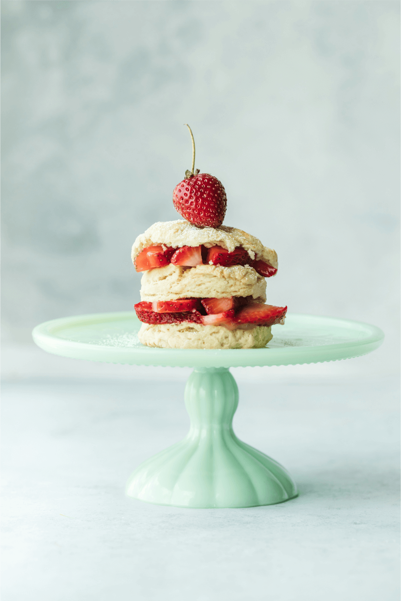

<!DOCTYPE html>
<html lang="zh-Hant-TW">
<head>
 <meta charset="UTF-8">
 <meta http-equiv="X-UA-Compatible" content="IE=edge">
 <meta name="viewport" content="width=device-width, initial-scale=1.0">
<title>Document</title>
<style>
.mask{
    mask-image: url(./straw_icon.svg);
    mask-size: 100% 100%;
    mask-position: center;
    mask-repeat: no-repeat;
}
img{
    display: block;
    width: 100%;
    object-fit: cover;
}
.photo{
    z-index: 10;
    width: 97%;
    position: absolute;
    margin: -9% 10%;
}
.straw{
    width: 100%;
}
.col{
    display: flex;
    position: relative;
    justify-content: center;
    align-items: center;
    flex: 1;
    margin: 1%;
}
.raw{
    display: flex;
    
}
</style>
</head>
<body>

<!-- <div class="col">
    <div class="photo mask">
        
        <a href="#">
            
        </a>
    </div>
    <div class="straw">
        
        
    </div>
</div> -->
<!--  -->
<div class="raw">
    <div class="col">
        <div class="photo mask">
            <!-- 草莓遮色片 -->
            <a href="#">
                
            </a>
        </div>
        <div class="straw">
            <!-- 底圖草莓 -->
            
        </div>
    </div>

    
    <div class="col">
        <div class="photo mask">
            <!-- 草莓遮色片 -->
            <a href="#">
                
            </a>
        </div>
        <div class="straw">
            <!-- 底圖草莓 -->
            
        </div>
    </div>
    <div class="col">
        <div class="photo mask">
            <!-- 草莓遮色片 -->
            <a href="#">
                
            </a>
        </div>
        <div class="straw">
            <!-- 底圖草莓 -->
            
        </div>
    </div>


</div>


</body>
</html>